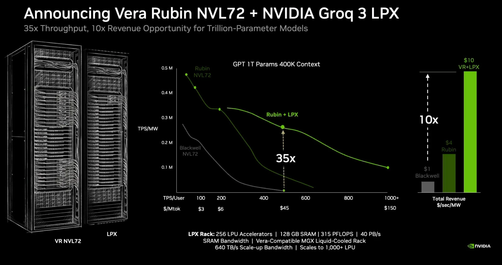
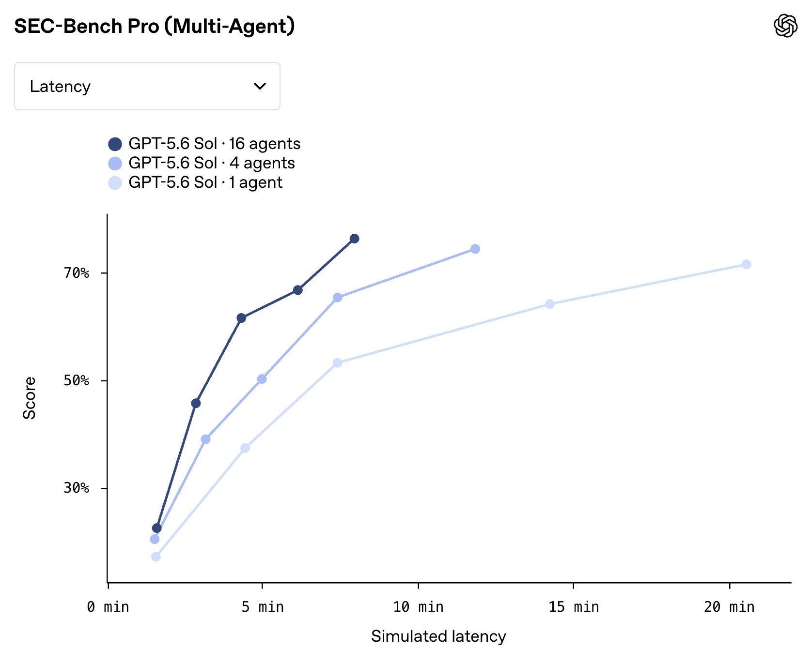

Proiezione NVIDIA · dati ricostruiti
Kimi K2 Thinking · input 32K / output 8K
A 225 tok/s/utente7,8×più token per megawatt
Scorri il grafico in orizzontale
Responsiveness × throughput
Sposta il cursore: sull'asse orizzontale vedi quanto risponde veloce, su quello verticale quanti token produce per megawatt.
Niente modelli chiusi, niente record di velocità senza il dato energetico, niente coordinate inventate.
Scorri il grafico in orizzontale
Perché il grafico interattivo conta
Un record di token al secondo, da solo, non dice quanto costa servire quella risposta a milioni di utenti. Il cursore tiene ferma la velocità percepita e confronta quanti token l'intero sistema riesce a distribuire con lo stesso megawatt.
A 400 token/s per utente, NVIDIA stima che Vera Rubin NVL72 insieme a Groq 3 LPX produca fino a 35× più token per megawatt di GB200 Blackwell NVL72. A parità di velocità, l'inverso della produttività energetica equivale a circa 1/35 dell'energia per token: quasi il 97% in meno.
Questo non significa automaticamente “35× meno costo totale”: hardware, raffreddamento, rete, memoria e utilizzo restano fuori dal rapporto. Il claim più ampio di NVIDIA per Vera Rubin è fino a un decimo del costo per token rispetto a Blackwell; è una proiezione del produttore, non ancora un benchmark indipendente.
Attenzione ai dollari nell'immagine. Il salto da $3 a $150 per milione di token è 50×, ma rappresenta prezzi ipotetici di servizi diversi — modelli, contesti e velocità diversi — non il costo misurato per distribuire lo stesso token. È proprio questa distinzione che il grafico interattivo rende visibile: bisogna confrontare lo stesso punto operativo.
Aggiornamento · 31 maggio 2026NVIDIA dichiara Vera Rubin in avvio della piena produzione; le prime spedizioni sono previste dall'autunno. Le curve LPX restano “projected performance subject to change”.

Dalla risposta alla forza-lavoro
Per anni l'esperienza dominante è stata semplice: scegli un modello, invii una richiesta, ricevi una risposta. Prezzi, limiti e accesso non erano davvero uguali per tutti, ma a parità di modello il lavoro investito nella singola risposta era molto meno visibile e regolabile.
Dal settembre 2024 la serie o di OpenAI ha reso esplicita una nuova leva: la qualità può crescere lasciando al modello più tempo e più compute durante la risposta. Oggi i sistemi multi-agent aggiungono una seconda dimensione: non solo pensare più a lungo, ma far lavorare più agenti contemporaneamente.
Schema semplificato: la singola chiamata segue una traiettoria. Spendere di più permette più richieste o più accesso, non necessariamente più lavoro interno sulla stessa domanda.
Con o1 il test-time compute diventa parte del prodotto: più tempo di ragionamento può migliorare il risultato, in cambio di più latenza e consumo.
Un coordinatore scompone il problema e assegna parti indipendenti a più agenti. Il budget cresce in parallelo: più capacità, ma anche più token e coordinamento.
La svolta non cancella la precedente: ogni subagent può a sua volta essere un modello di ragionamento. Profondità e parallelismo si moltiplicano.
Infografica · schema concettuale
Immagina una ricerca con quattro parti indipendenti. Un solo agente deve attraversarle una dopo l'altra. Una squadra può esplorarle insieme e lasciare al coordinatore la sintesi finale.
Un caso concreto · dati OpenAI 2026
SEC‑Bench Pro misura la capacità di generare prove di concetto su software complesso. Nel grafico lo stesso GPT‑5.6 Sol lavora da solo oppure coordina 4 o 16 agenti: aumentando il parallelismo, la curva sale e si sposta verso sinistra.
Scorri il grafico

Come leggerlo: è un benchmark cyber interno pubblicato da OpenAI e usa latenza simulata. Mostra bene il meccanismo, ma non garantisce lo stesso vantaggio su attività che non possono essere divise in parti indipendenti.
La nuova disuguaglianza del compute
Non compri necessariamente un modello diverso.
Compri più lavoro dello stesso modello.
La “democratizzazione” non è mai stata totale: già prima denaro e infrastruttura compravano più chiamate, priorità, fine-tuning e strumenti. La differenza emergente è più diretta. A parità di modello, chi ha più budget può assegnare più compute alla stessa task: prima aumentando il ragionamento, ora anche moltiplicando gli agenti.
Questo può creare un divario concreto tra una risposta economica e una squadra di agenti che ricerca, calcola, contesta e verifica in parallelo. Ma più agenti non significa automaticamente più intelligenza: possono duplicare il lavoro, propagare errori o bloccarsi nella coordinazione.
Non è più soltanto una previsione
L'app Codex gestisce più agenti in thread e worktree isolati. OpenAI riferisce che, nel giugno 2026, gli utenti interni al 99° percentile superavano regolarmente 60 ore di turni-agent al giorno distribuite su agenti paralleli.
Fonte OpenAI ↗Il lead agent genera subagent specializzati che cercano simultaneamente. Anthropic riporta +90,2% nel proprio eval interno e fino al 90% di tempo in meno su ricerche complesse, ma circa 15× i token di una chat.
Fonte Anthropic ↗Un orchestratore dirige agenti distinti per browser, file, terminale e codice. È un sistema di ricerca open source: mostra il pattern in pratica, ma Microsoft avverte che resta lontano dall'affidabilità umana.
Fonte Microsoft ↗Le curve di inferenza sono digitalizzate dai grafici dei produttori e quindi approssimative. I claim prestazionali di NVIDIA, OpenAI e Anthropic restano dichiarazioni o valutazioni interne dei rispettivi produttori.
La velocità nasce dal parallelismo. Più agenti esplorano, verificano e correggono nello stesso intervallo invece di aspettare il proprio turno.
In questa prova, una squadra di 16 agenti supera il 70% in meno della metà del tempo impiegato dall'agente singolo per arrivare appena sopra quella soglia. È un vantaggio di tempo trascorso e qualità raggiunta, non una riduzione del lavoro totale.